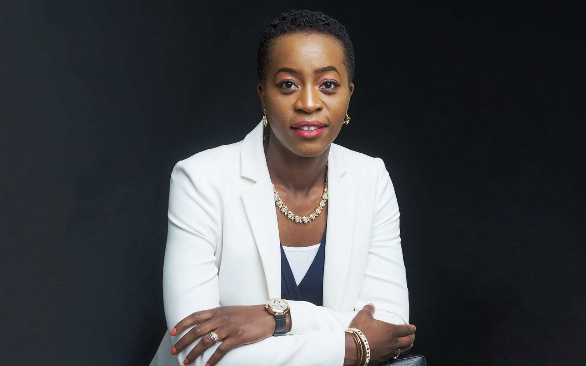
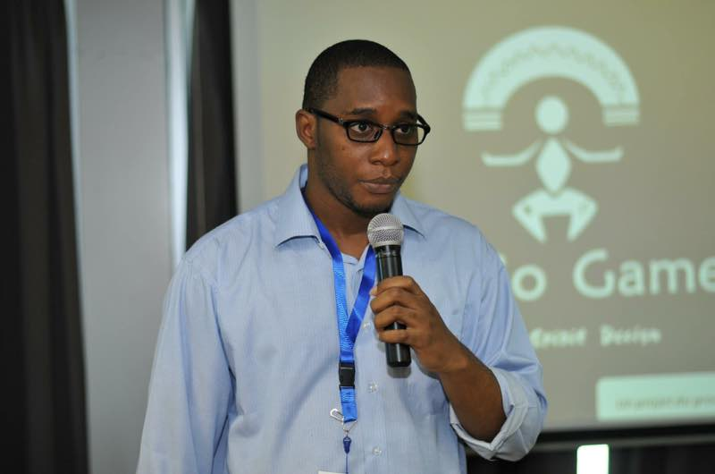

Estelle Yomba
Estelle Yomba is currently Senior Technical Program Manager at Google where she has been working since 2015 as a software engineer. Estelle is multifunctional. While holding a high level position at Google, where she was recruited after working for eBay, Estelle Yomba is the founder of "Sunshine Africa Education" and "Seven Group", whose goal is to solve the problem of low economic growth in francophone Africa through quality practice-oriented education and digital transformation.

Elon Musk
Elon Musk is working to revolutionize transportation both on Earth, through electric car maker Tesla - and in space, via rocket producer SpaceX. He owns 21% of Tesla but has pledged more than half his stake as collateral for loans; Forbes has discounted his stake to take the loans into account. He settled with the SEC in September 2018 for making alleged "false statements" about a plan to take Tesla private, and had to step down as chairman. SpaceX, Musk's rocket company, is now valued at nearly $36 billion.

Madiba Olivier
In 2013, he created Kiro'o Games, his video game studio. But he is not alone. He is carrying out his project with a team of about twenty young people, all trained locally and who are "determined to realize their passion of yesteryear". They hope to release the game on PS4 and XBOX ONE later. Aurion: The Legacy of the Kori-Odan "is inspired by African culture and imagination. The hero of the game, Enzo Koni-Odan, seeks alongside his fiancée, Erine Evou, to regain his throne, usurped by his brother-in-law. "It's not about good versus evil. It's a quest and surpassing oneself